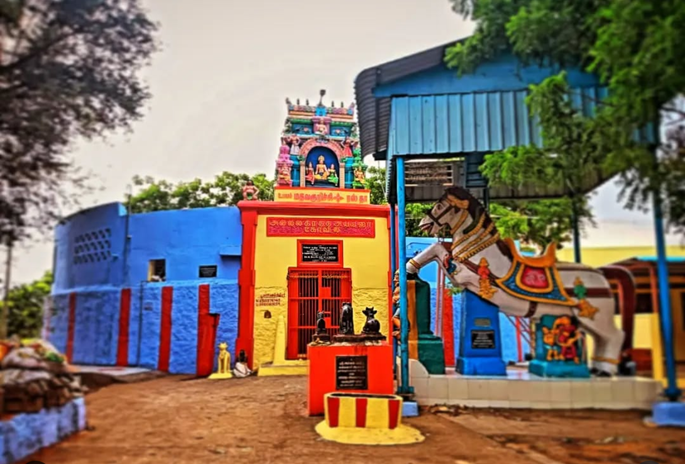
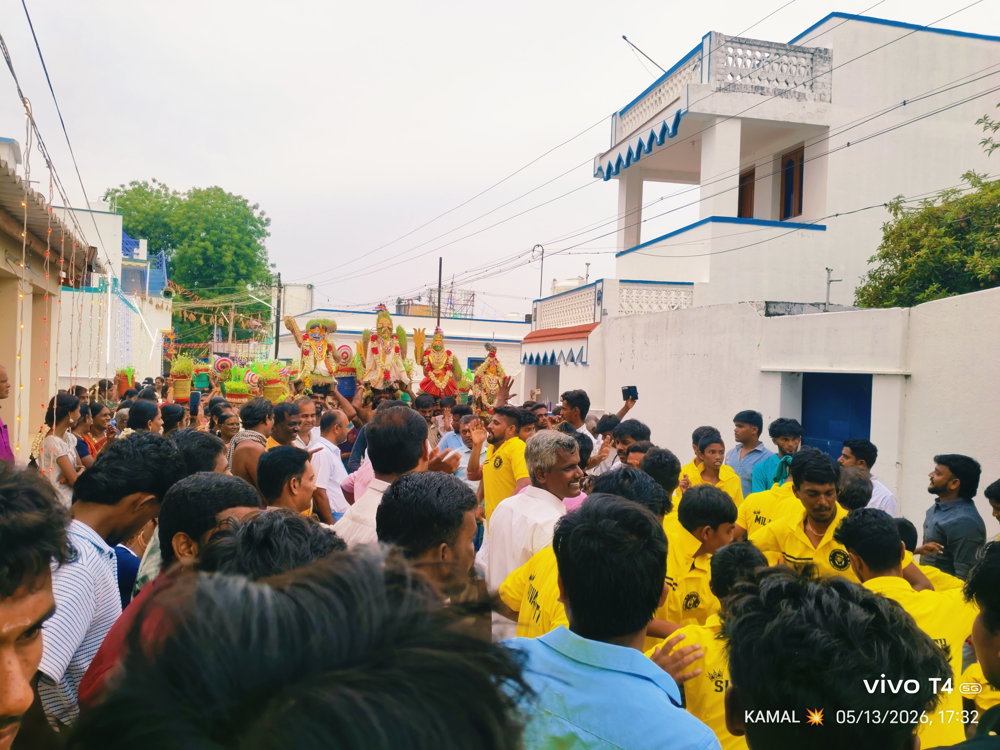
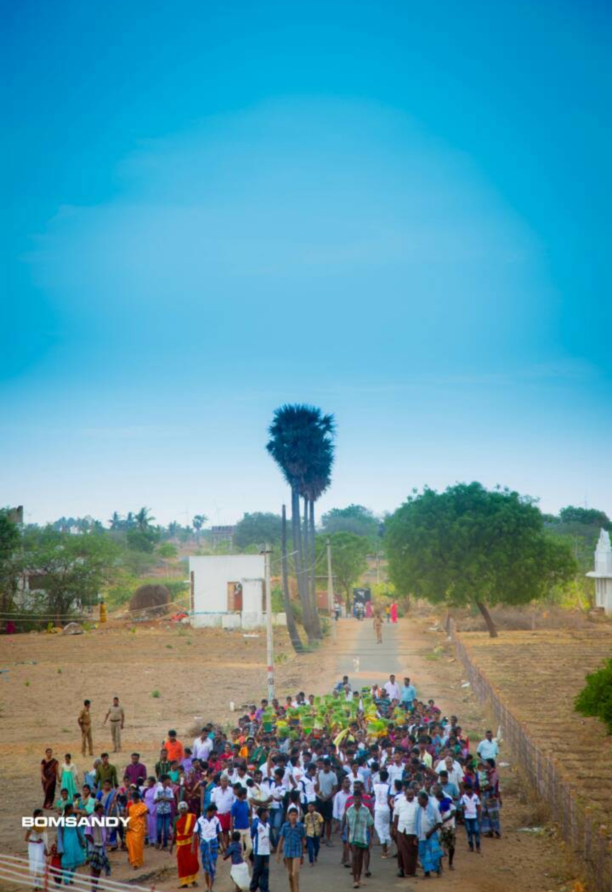
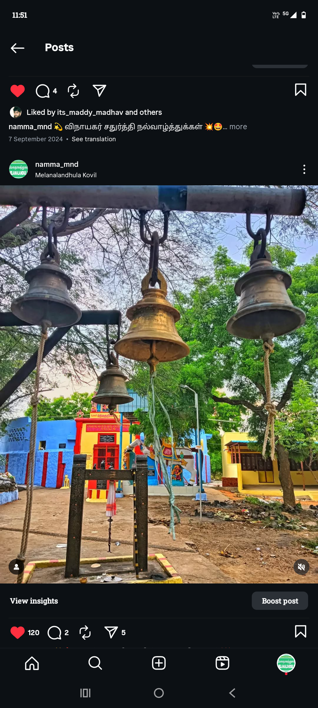
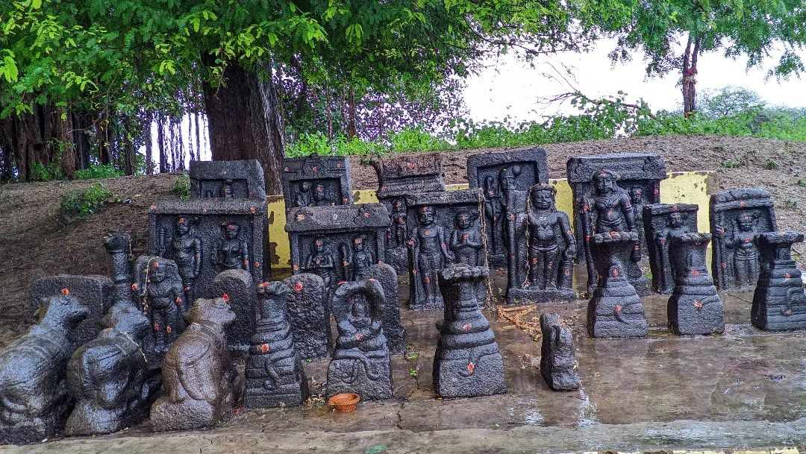
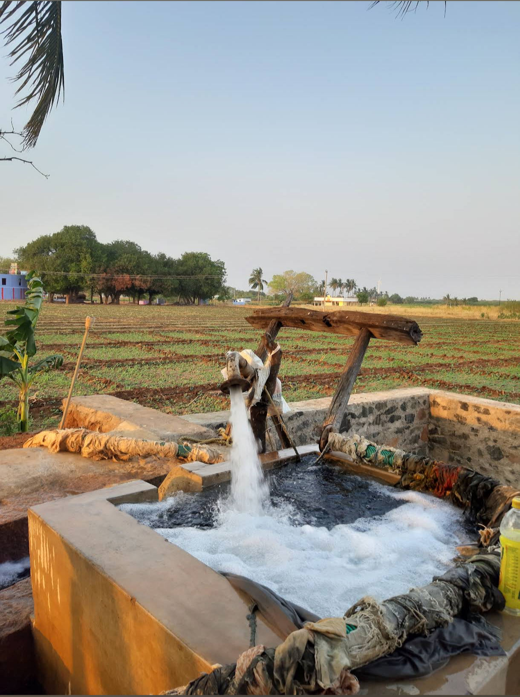
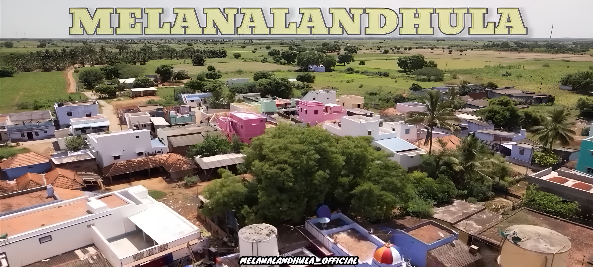
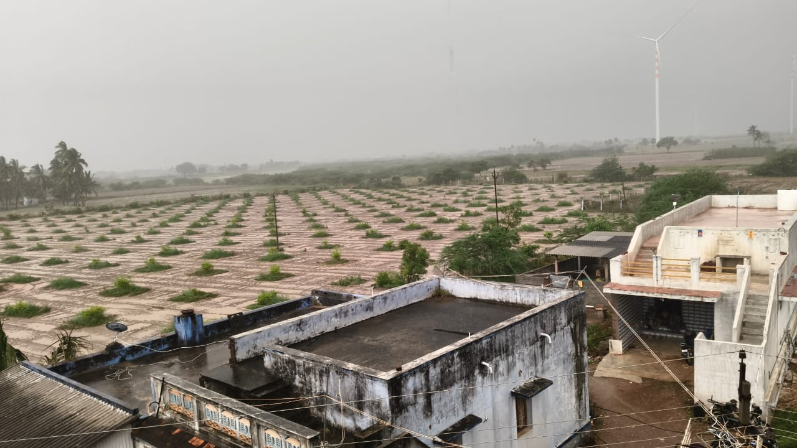
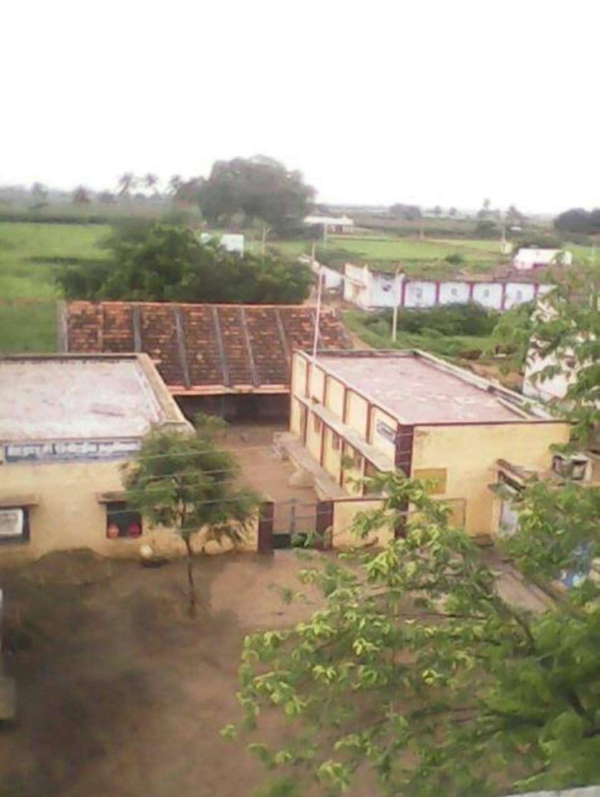

A peaceful village filled with culture, tradition, unity and spirituality.
Explore Our VillageMelanalandhula is a peaceful village situated in Nalandula Panchayat, Kuruvikulam Union, Thiruvengadam Taluk, Tenkasi District, Tamil Nadu. The village is well known for its culture, unity, agriculture and religious harmony. “ மேலநாலாந்துலா "என்ற பெயர் இவ்வூரில் உள்ள கிணற்றின் தனித்துவமான அமைப்பிலிருந்து உருவானது. அந்தக் கிணற்றில் நான்கு பக்கங்களிலும் துலாக்கள் அமைக்கப்பட்டு, நான்கு திசைகளிலிருந்தும் தண்ணீர் இறைத்தனர். இந்தச் சிறப்பம்சமே இவ்வூருக்கு “ மேலநாலாந்துலா " என்ற பெயர் வரக் காரணமாகக் கருதப்படுகிறது.
Houses
Population
Registered Voters
Pincode

One of the oldest temples in the village. Festival: Panguni Uthiram

The most important village festival is celebrated during the Tamil month of Chithirai.
Arulmigu Puthamman Kaliyamman Temple Festival is the biggest annual festival celebrated by the people of Melanalandhula Village.
Arulmigu Allal Kaththa Ayyanar Temple Festival is celebrated with great devotion every year.







🏫 Panchayat Union Middle School is located in Melanalandhula Village and serves the local students.
Click below to view the location of Melanalandhula Village on Google Maps.
📍 View on Google Maps
📍 Melanalandhula Village
Nalandula Panchayat
Kuruvikulam Union
Thiruvengadam Taluk
Tenkasi District - 628552